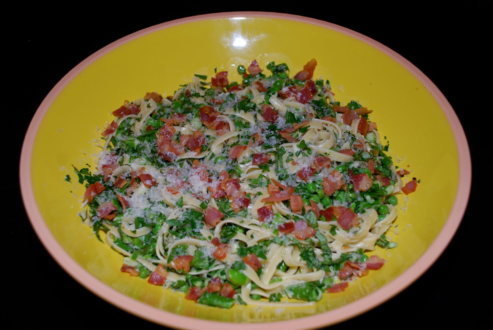

Step 3: Add vegetable mixture, 1/4 cup pasta cooking liquid, dark green parts of green onions, 1/2 cup Parmesan, cream, olive oil, lemon juice, lemon peel, half of parsley, and half of basil to pasta. Toss, adding more cooking liquid by tablespoonfuls if needed. Season with salt and freshly ground black pepper. Transfer to large bowl. Sprinkle pancetta, remaining parsley, and basil over. Serve, passing additional Parmesan cheese. Enjoy!
